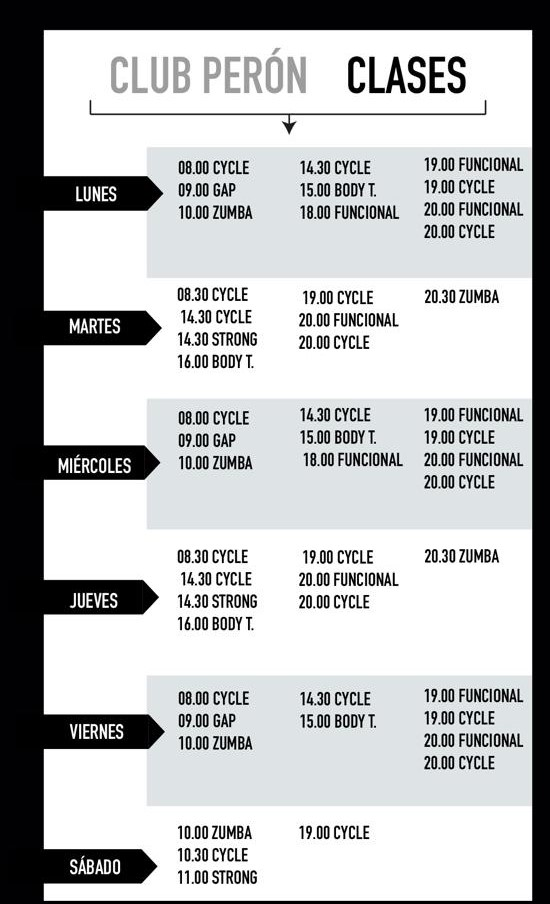

Sede Peron
Av. Peron 1793
HORARIO DE CLASES
Instalaciones con altos estandares de calidad. Un gimnasio cerca, no importa donde estes
Actualmente con 7 clubes en la provincia y mas de 30 años en el sector, cambiamos la vida de miles y miles de tucumanos que entrenan todos los días en nuestras instalaciones junto con los mejores profesionales de la actividad física y nutrición. Contamos con una amplia grilla de horarios para que puedas entrenar diariamiente y a tu ritmo. Buscamos constantemente adaptarnos a las necesidades de nuestros socios en cuanto a variedad y tipos de clases.